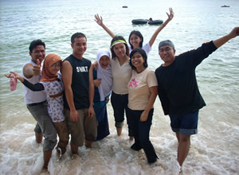

Hubungan pribadi
Reproduced with the permission of Sugeng Hariyadi.
Personal relationships have a great impact on anyone's world.
How would you finish the following statement?
Bagi saya, hubungan yang paling penting adalah ...
- teman saya
- orang tua saya
- pacar saya
- sesuatu yang lain.
Bagaimana hubungan Anda dengan teman/orang tua/pacar?
Hubungan saya dengan teman/orang tua/pacar:
- baik
- cukup baik
- kurang baik
- ramah
- dekat sekali
- sangat akrab
Teman baik
Go to the pojok bahasa and revise the following kosa kata:
In Indonesian, answer the question:
Bagaimana sifat teman yang baik? Daftarkanlah!
Jadi wartawan
Bicaralah!
Radio Kangguru, the Australian radio station in Indonesia, has employed you to do a report on hubungan pribadi di dunia remaja. You are required to find out people's opinions on two questions:
- Hubungan apa yang paling penting di dunia Anda? Misalnya teman, keluarga atau pacar?
- Bagaimana sifat teman yang baik?
In Indonesian, conduct a survey of anak remaja to find out the answers to these questions. You can conduct the survey online or in person. (It would be helpful to record the interviews and other people's opinions for the radio report.)
Tips
- Go back to Dangdut > Kamu suka musik jenis apa? and watch the interview Brack conducted with Dewi and Diego for ideas.
- Revise your repair strategies, such as using the phrases 'tolong ulangi', 'pelan-pelan' and 'apa artinya'.
- See if you can find a native Indonesian speaker to interview.
When you have conducted all your interviews, for the first question work out the percentages of each category. Do this by dividing the number of people who chose each category by the total number of people you asked. (For example, if seven out of nine people said friends were the most important thing, calculate seven divided by nine.)
Present your findings as a radio report in Indonesian. (Remember, you can use link words to make longer sentences.)
- Menurut … %
- Hubungan dengan … yang paling penting.
- Bagi remaja …
Also add whether or not the information surprised you.
- Menurut saya, ini …
- kurang mengherankan
- tidak begitu mengherankan
- sangat mengherankan
- Yang sangat mengherankan adalah …
Longer words such as mengherankan can be tongue twisters when you are not used to them. It is always helpful to:
- break the word down into its syllables (in this case, meng-he-ran-kan)
- remember that the emphasis is usually on the second last syllable.
Practise breaking down and saying the following tongue twisting words:
- mengumumkan
- pengumuman
- perpustakaan
- kesusasteraan
Note: Double 'a' occurs in Indonesian. It is not difficult to pronounce. It just sounds like you are saying the word 'a' ('uh' like the first 'a' in amazing, not 'ey'/'ay') twice.